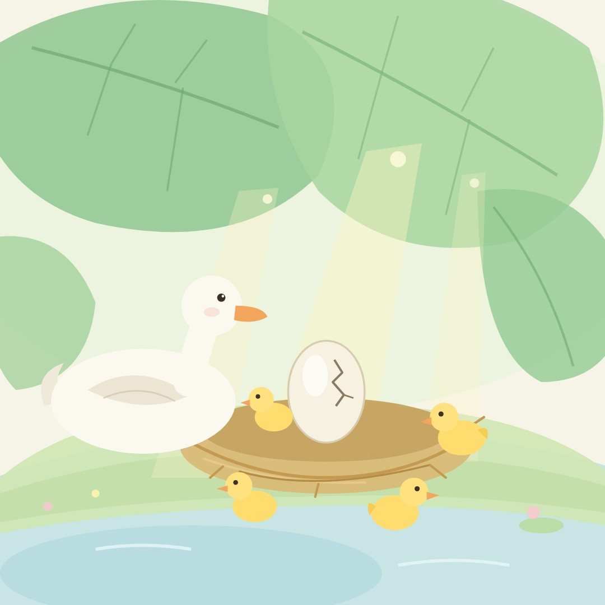

한스 크리스티안 안데르센
미운
아기 오리
모두에게 놀림받던 회색 아기 오리가
긴 겨울을 지나 자기 모습을 찾아가는 이야기
책 펼치기
›
차례
1
여름날 시골
2
하나둘 깨어나는 아기들
3
칠면조 알이라고요?
4
크고 못생긴 아기
5
첫 헤엄
6
오리 농장
7
울타리 너머로
8
습지의 총소리
9
폭풍 속 오두막
10
고양이와 암탉
11
가을 하늘의 백조
12
얼어붙은 겨울
13
다시 찾아온 봄
14
물에 비친 모습
15
가장 아름다운 백조